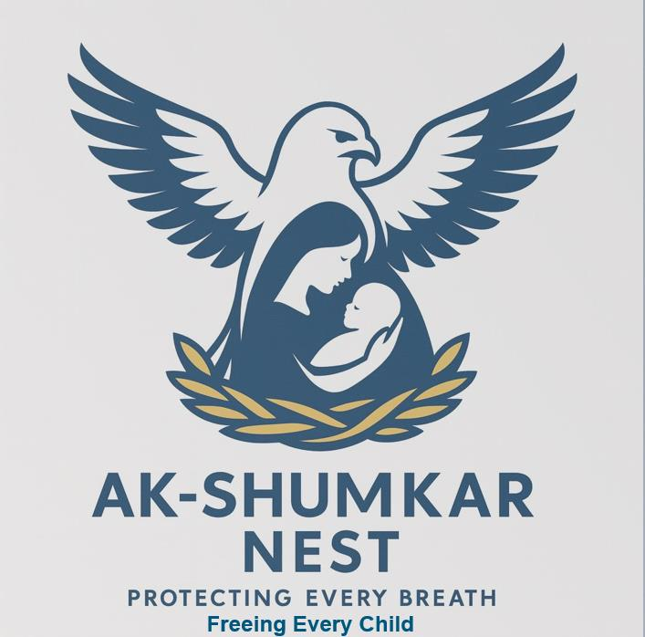
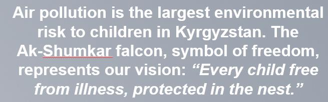

<!doctype html>
<html lang="en">
<head>
  <meta charset="utf-8" />
  <meta name="viewport" content="width=device-width,initial-scale=1" />
  <title>Ak-shumkar Nest — Seal &amp; Breathe</title>
  <meta name="description" content="Ak-shumkar Nest checklist and campaign overview for healthier indoor air." />
  <link rel="preconnect" href="https://fonts.googleapis.com">
  <link rel="preconnect" href="https://fonts.gstatic.com" crossorigin>
  <link href="https://fonts.googleapis.com/css2?family=Inter:wght@400;600;700&display=swap" rel="stylesheet">
  <link rel="stylesheet" href="./styles.css" />
</head>
<body>
  <a class="skip" href="#main">Skip to content</a>

  <header class="topbar">
    <div class="container topbar__inner">
      <div class="brand">
        
        <span class="brand__name">Ak-shumkar Nest</span>
      </div>
      <nav class="nav">
        <a href="#checklist">Checklist</a>
        <a href="#do-dont">Do &amp; Don&apos;ts</a>
        <a href="#evidence">Evidence</a>
        <a href="#materials">Materials</a>
        <a href="#strategy">7 Cs</a>
        <a href="#references">References</a>
      </nav>
    </div>
  </header>

  <main id="main">
    <section class="hero">
      <div class="container hero__inner">
        <div class="hero__left">
          
          <div class="hero__quote">
            
          </div>
        </div>

        <div class="hero__right">
          <div class="card">
            <h1>Seal &amp; Breathe</h1>
            <p class="lead">A minimal, evidence-informed checklist for creating a clean, warm, safe nest for every newborn breath.</p>
            <div class="card-divider"></div>
            <h2>Focus</h2>
            <p>Behavior-first messaging built on local traditions and global health guidance. The checklist turns complex indoor air interventions into three doable home actions.</p>
            <ul class="bullets">
              <li><strong>Seal</strong> drafts with felt strips.</li>
              <li><strong>Isolate</strong> warmth to keep homes above 18°C.</li>
              <li><strong>Ventilate</strong> at the cleanest time of day.</li>
            </ul>
          </div>
        </div>
      </div>
    </section>

    <section class="section" id="checklist">
      <div class="container">
        <div class="section__head">
          <h2>Seal &amp; Breathe</h2>
          <p class="muted">Nest Checklist</p>
        </div>

        <div class="grid grid--2">
          <div class="card">
            <p class="lead">Core message: Prepare your Ak-shumkar Nest: A clean, warm, safe space protects your baby’s first and every breath.</p>
            <p><strong>Communication Objective:</strong> To encourage caregivers, particularly fathers and pregnant women, to implement a set of evidence-based home practices (localized insulation, draft sealing, and targeted ventilation) to lower newborn exposure to fine particulate matter (PM2.5), thereby reducing the risks of acute lower respiratory infections, low birth weight, and preterm birth.</p>
            <p><strong>Key Benefit/ Promise:</strong> By preparing the "nest," caregivers ensure their newborn breathes cleaner air, “Your baby will breathe cleaner air, grow stronger, and have a healthier, disease-free future.” This promise combines emotional protection (cultural value) with scientific benefit (reduced PM2.5 exposure).</p>
            <p><strong>Desired Action Response:</strong> Before the baby arrives, caregivers will finish a localized "Nest Checklist," which will lead to the changes of the home environment (such as timing ventilation and sealing windows/doors with felt).</p>
          </div>

          <div class="card">
            <h3>Checklist</h3>
            <p class="muted">Your progress is saved on this device.</p>

            <ul class="checklist" data-checklist="nest">
              <li>
                <label class="check">
                  <input type="checkbox" id="c1" />
                  <span>Seal (Felt)</span>
                </label>
              </li>
              <li>
                <label class="check">
                  <input type="checkbox" id="c2" />
                  <span>Isolate (Warmth)</span>
                </label>
              </li>
              <li>
                <label class="check">
                  <input type="checkbox" id="c3" />
                  <span>Ventilate (Airflow)</span>
                </label>
              </li>
              <li class="divider"></li>
              <li>
                <label class="check">
                  <input type="checkbox" id="c4" />
                  <span>Weekly Nest Check: inspect felt seals and do a short-burst ventilation cycle.</span>
                </label>
              </li>
            </ul>

            <div class="actions">
              <div class="progress" aria-hidden="true">
                <span class="progress__bar" id="progress-bar"></span>
              </div>
              <button class="btn" id="reset">Reset checklist</button>
              <span class="muted" id="status" aria-live="polite"></span>
            </div>
          </div>
        </div>
      </div>
    </section>

    <section class="section" id="do-dont">
      <div class="container">
        <div class="section__head">
          <h2>Do &amp; Don&apos;ts</h2>
          <p class="muted">Quick guide</p>
        </div>

        <div class="grid grid--2">
          <div class="card do-card">
            <h3>Do</h3>
            <ul class="do-list">
              <li>Seal (Felt)</li>
              <li>Isolate (Warmth)</li>
              <li>Ventilate (Airflow)</li>
              <li>Weekly Nest Check: inspect felt seals and do a short-burst ventilation cycle.</li>
            </ul>
          </div>
          <div class="card dont-card">
            <h3>Don&apos;t</h3>
            <ul class="dont-list">
              <li>Synthetic Foam/Rubber Seals</li>
              <li>Petroleum-based: Non-renewable chemicals.</li>
              <li>Basic: Static insulation; loses loft over time.</li>
              <li>Non-breathable: Traps condensation; promotes mold.</li>
              <li>Inactive: Simply blocks air; may off-gas VOCs.</li>
              <li>Low: Cracks, peels, and degrades in 1-2 seasons.</li>
              <li>Generic: Industrial/Imported feel.</li>
            </ul>
          </div>
        </div>
      </div>
    </section>

    <section class="section" id="evidence">
      <div class="container">
        <div class="section__head">
          <h2>Evidence &amp; messaging</h2>
          <p class="muted">Key claims &amp; rationale used in the campaign text</p>
        </div>

        <div class="info-list">
          <details class="info-card" open>
            <summary>Health protection threshold</summary>
            <p>Effective sealing with felt strips and maintaining a stable temperature ensures the home stays above the 18°C threshold recommended for protecting respiratory health (WHO 2018).</p>
          </details>
          <details class="info-card">
            <summary>Energy poverty &amp; heat loss</summary>
            <p>We provide logical proof that sealing drafts with wool-felt can reduce heat loss by up to 25%, a critical factor for families facing energy poverty (ARIS 2020).</p>
          </details>
          <details class="info-card">
            <summary>Targeted ventilation timing</summary>
            <p>"We ventilate at 2:00 PM because the air is 30% cleaner than at 8:00 AM" (UNICEF 2022).</p>
          </details>
          <details class="info-card">
            <summary>Tradition &amp; practice framing</summary>
            <p>The Heart (Tradition): We tap into the "Heart" by connecting the checklist to the Yurt tradition. Framing the felt strips and the Kelt (lattice) ventilation as a modern evolution of the Kerege (yurt wall) honors Kyrgyz heritage, making the health intervention feel like an act of cultural pride rather than an external instruction. Just as the Tunduk (roof hole) of the yurt was opened during the sunny heat of the day to let out the smoke, we open our modern windows when the sun is highest to let our 'Nest' breathe."</p>
          </details>
        </div>
      </div>
    </section>

    <section class="section" id="materials">
      <div class="container">
        <div class="section__head">
          <h2>The "Warm Nest" Protective Barrier: Material &amp; Health Comparison</h2>
          <p class="muted">From the campaign report table</p>
        </div>

        <details class="info-card">
          <summary>The "Warm Nest" Protective Barrier: Material &amp; Health Comparison</summary>
          <div class="table-wrap">
            <table>
              <thead>
                <tr>
                  <th>Feature</th>
                  <th>Wool-Felt Strips (Akshumkar Seal)</th>
                  <th>Synthetic Foam/Rubber Seals</th>
                  <th>Health &amp; Strategic Impact (Wool-Felt)</th>
                </tr>
              </thead>
              <tbody>
                <tr>
                  <td>Material Composition</td>
                  <td>Natural &amp; Bioactive: Renewable Kyrgyz wool.</td>
                  <td>Petroleum-based: Non-renewable chemicals.</td>
                  <td>Sustainability: Supports local economy &amp; reduces plastic waste.</td>
                </tr>
                <tr>
                  <td>Thermal Performance</td>
                  <td>Superior: Natural "crimps" trap air to maintain 18°C (WHO 2018).</td>
                  <td>Basic: Static insulation; loses loft over time.</td>
                  <td>Head: Prevents cardiovascular &amp; respiratory stress from cold.</td>
                </tr>
                <tr>
                  <td>Moisture &amp; Mold</td>
                  <td>Breathable: Absorbs/releases moisture to prevent mold growth.</td>
                  <td>Non-breathable: Traps condensation; promotes mold.</td>
                  <td>Heart: Protects children from asthma triggers (WHO 2009).</td>
                </tr>
                <tr>
                  <td>Air Purification</td>
                  <td>Active: Naturally neutralizes pollutants like (NO_2) and Formaldehyde.</td>
                  <td>Inactive: Simply blocks air; may off-gas VOCs.</td>
                  <td>Safety: Acts as a 24/7 mechanical filter for the "Nest."</td>
                </tr>
                <tr>
                  <td>Durability</td>
                  <td>High: Resists UV radiation and mountain temperature swings.</td>
                  <td>Low: Cracks, peels, and degrades in 1-2 seasons.</td>
                  <td>Economy: A long￾term investment for low-income families.</td>
                </tr>
                <tr>
                  <td>Cultural Identity</td>
                  <td>Profound: Linked to the Yurt heritage (Kerege/Kiyiz).</td>
                  <td>Generic: Industrial/Imported feel.</td>
                  <td>Ideation: Boosts "Self-Efficacy" through cultural pride.</td>
                </tr>
              </tbody>
            </table>
          </div>
        </details>

      </div>
    </section>

    <section class="section" id="strategy">
      <div class="container">
        <div class="section__head">
          <h2>The Seven C’s: "Akshumkar Nest" Campaign Strategy</h2>
          <p class="muted">Expandable sections</p>
        </div>

        <div class="accordion">
          <details>
            <summary>1. Command Attention</summary>
            <div class="panel">
              <p>The Falcon’s Nest Symbol of the Ak-shumkar (White Falcon) as the main logo to represent a guardian of the household. Just as the falcon selects high, clean environments for its young, our campaign commands attention by framing the home as a "Nest" that requires intentional construction. This visual metaphor aligns with the UNICEF (2020) and WHO (2023) approach of using culturally resonant symbols to drive community engagement in health behaviors.</p>
            </div>
          </details>

          <details>
            <summary>2. Clarify Message</summary>
            <div class="panel">
              <p>The "Seal &amp; Breathe" Checklist, the message is refined into a three-step Nest Checklist: Seal (Felt), Isolate (Warmth), and Ventilate (Airflow). This addresses the dual challenge in Kyrgyzstan: preventing cold air infiltration while ensuring proper air exchange. Clarifying that ventilation is necessary even in cold weather is crucial to prevent "sick building syndrome," as noted in WHO (2009) guidelines on indoor air quality.</p>
            </div>
          </details>

          <details>
            <summary>3. Communicate Benefit</summary>
            <div class="panel">
              <p>A Resilient, Healthy Child, the primary benefit is a child free from diseases like pneumonia and bronchitis. Effective sealing with felt strips and maintaining a stable temperature ensures the home stays above the 18°C threshold recommended for protecting respiratory health (WHO 2018). The secondary benefit is economic, as reduced heat loss directly translates to lower household expenditure on coal or electricity.</p>
            </div>
          </details>

          <details>
            <summary>4. Consistency</summary>
            <div class="panel">
              <p>A Single Language of Protection, consistency is maintained through bilingual (Kyrgyz/Russian) messaging and the repeated use of the "Nest Checklist" across clinics and schools. As UNICEF (2015) emphasizes, repetitive, multi-channel communication is the most effective way to turn a one-time health recommendation into a permanent social norm within a community.</p>
            </div>
          </details>

          <details>
            <summary>5. Cater to Heart and Head</summary>
            <div class="panel">
              <p>(Tradition Meets Science) The Head (Science): We provide logical proof that sealing drafts with wool-felt can reduce heat loss by up to 25%, a critical factor for families facing energy poverty (ARIS 2020). "We ventilate at 2:00 PM because the air is 30% cleaner than at 8:00 AM" (UNICEF 2022). We seal with felt, and the reason we chose felt is because of the science behind it in helping achieve our campaign goals.</p>
              <p>The Heart (Tradition): We tap into the "Heart" by connecting the checklist to the Yurt tradition. Framing the felt strips and the Kelt (lattice) ventilation as a modern evolution of the Kerege (yurt wall) honors Kyrgyz heritage, making the health intervention feel like an act of cultural pride rather than an external instruction. Just as the Tunduk (roof hole) of the yurt was opened during the sunny heat of the day to let out the smoke, we open our modern windows when the sun is highest to let our 'Nest' breathe."</p>
            </div>
          </details>

          <details>
            <summary>6. Create Trust</summary>
            <div class="panel">
              <p>The Seal of Authority, trust is gained by integrating local knowledge into the context of international expertise. We offer a "Gold Standard" of care by offering the checklist as a tool recommended by UNICEF and WHO data with Kyrgyz Yurt Heritage. It has been proven that this "hybrid" authority, which combines regional traditional materials with global medical data, increases adoption rates in rural Central Asian contexts (UCA 2020).</p>
            </div>
          </details>

          <details>
            <summary>7. Call to Action</summary>
            <div class="panel">
              <p>The Weekly Household Checklist, the campaign concludes with a clear behavioral trigger: the Weekly Nest Check. Caregivers are encouraged to physically check their felt seals and ensure they have performed "short-burst ventilation." This call to action transforms passive knowledge into an active, life-saving habit for the family.</p>
            </div>
          </details>
        </div>
      </div>
    </section>

    <section class="section" id="references">
      <div class="container">
        <div class="section__head">
          <h2>7Cs Reference</h2>
          <p class="muted">Links as provided in the report</p>
        </div>

        <div class="card">
          <ul class="refs">
            <li>UNICEF 2020: <a href="https://www.unicef.org/mena/reports/community-engagement-standards">https://www.unicef.org/mena/reports/community-engagement-standards</a></li>
            <li><a href="https://iris.who.int/server/api/core/bitstreams/d284845d-854c-4fe7-9504-41d2486e0896/content">https://iris.who.int/server/api/core/bitstreams/d284845d-854c-4fe7-9504-41d2486e0896/content</a></li>
            <li>with unicef for culture WHO, U. Nurturing care framework progress report 2018–2023: reflections and looking forward.(2023). View Article.</li>
            <li>World Health Organization (WHO) (2009) WHO Guidelines for Indoor Air Quality: Dampness and Mould. Geneva: WHO Press. Available at: <a href="https://www.ncbi.nlm.nih.gov/books/NBK143943/">https://www.ncbi.nlm.nih.gov/books/NBK143943/</a> (Accessed: 11 January 2026).</li>
            <li>World Health Organization (WHO) (2018) Housing and Health Guidelines. Geneva: WHO Press. Available at: <a href="https://www.ncbi.nlm.nih.gov/books/NBK535294/">https://www.ncbi.nlm.nih.gov/books/NBK535294/</a> (Accessed: 11 January 2026).</li>
            <li>UNICEF (2015) Communication for Development (C4D) Curriculum. New York: UNICEF.</li>
          </ul>
        </div>

        <footer class="footer">
          <p class="muted">Ak-shumkar Nest — static page for GitHub Pages</p>
        </footer>
      </div>
    </section>
  </main>

  <script src="./script.js"></script>
</body>
</html>
